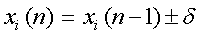
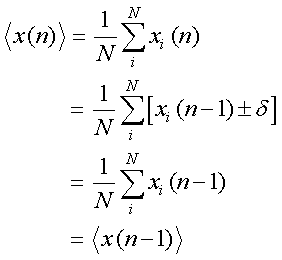
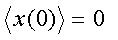

シミュレーションのすすめ
まず，１次元の空間を考えます．
粒子は，この１次元上しか運動できない，とします．
そして，条件として，
１．各粒子は速度ｖでτ秒ごとにδ＝ｖτだけ，右か左に移動する
２．左右に移動する確率は１/２で等しい
３．各粒子は他のすべての粒子と無関係に動く
というものを与えます．
この条件下で，ｎステップ後に粒子がどこにいるかを考えます．
もちろん，左右，ランダムに動きますので，各粒子の絶対的な位置は，わかりません．
しかし，Ｎ個の粒子の平均の位置，広がりぐらいは評価できますね．
まず，Ｎ個の粒子の集合を考えます．
そして，ｎステップ後の位置をxi(n)としましょう．
すると，ｉという粒子のｎ番目の位置は，

となります．
つまり，１個前の位置の左右どちらかの位置，となります．
全粒子の平均は，

となります．
つまり，ｎステップ後もｎ－１ステップ後も平均の位置は変わらない．
平均の位置は，ずっと変わらない，と言うことになります．
では，初期値，ｎ＝０の場合はどうなるでしょう？
それは当然，

となります．
つまり，１次元の拡散運動の場合，平均位置はずーっと，０，なのです．